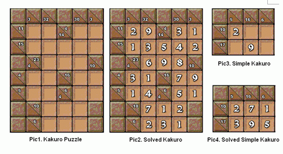

很多人都曾经听说过数独，但你是否听说过数谜（Karuro）呢？实际上，数谜是数独的更大（且更难）的兄弟问题，而且在日本也是非常受欢迎的。
数谜问题和填字游戏类似，不过它要填的不是文字而是数字。数谜游戏的目标是用1-9填满所有空格，且这些数字相加的和满足相应的要求（或者称为“提示”），且在同一栏（“栏”是指一些水平或者竖直的连续的空格，用于提示的格子不算空格）不能填重复的数字。当所有格子按要求被填满后，这个数谜就看作被解决了。图1和图2是一个可能的数谜游戏示例。
当然，直接求解数谜问题的话会比较困难。所以现在我们需要解决的是一个更简单的数谜问题。简单数谜的形状是一个(n+1）行乘(m+1)列的矩形。而简单数谜也只有两种要求，就是行要求和列要求，且分别处于第一行和第一列，其他格子则是空格，而左上角是忽略不计的。coolzzz同学爱好简单数谜，他已经给一些简单数谜填好了其中的一些空格。现在，他想寻求你的帮助，来帮他完成这些简单数谜。如图3所示，2和9是coolzzz同学已经填好的空格，图4则是一个基于图3 的一个可能的解答。
